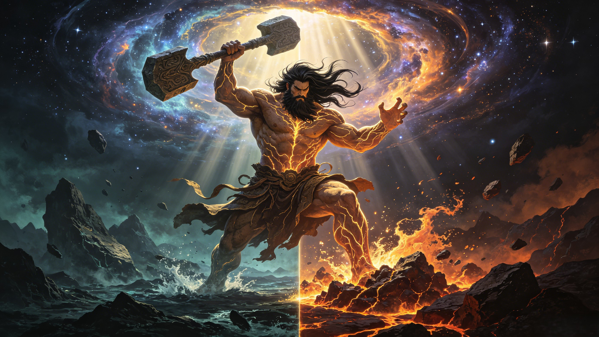

The First Living Being
盘古
For 18,000 years he slept inside a cosmic egg. Then he woke, swung his axe, and split nothingness into heaven and earth. When he died, his body became the world — every mountain, every river, every star. He is the universe, and the universe is him.
Pangu (盘古) is the first living being in Chinese mythology — the primordial giant who slept inside a cosmic egg for 18,000 years before splitting heaven from earth with his axe. When he died, his body became the world: his breath the wind, his eyes the sun and moon, his blood the rivers, and his flesh the soil.
Who is Pangu in Chinese mythology? Pangu (盘古) is the first living being — the primordial creator whose body literally became the world. In the beginning, there was only a formless, chaotic void called Hundun (混沌) — a cosmic egg containing all the undifferentiated matter of the universe. Inside this egg, Pangu gestated for 18,000 years. When he awoke, he shattered the egg with a single swing of his giant axe, separating the light, clear elements (which rose to become heaven) from the heavy, turbid elements (which sank to become earth). He stood between them for another 18,000 years, pushing heaven upward by ten feet each day while the earth thickened by ten feet below him — growing taller all the while — until the distance between sky and ground was fixed at 90,000 li (about 45,000 kilometers). When he finally died of exhaustion, his body transformed: his breath became the wind and clouds, his voice thunder, his left eye the sun and right eye the moon, his four limbs the four cardinal directions, his blood the rivers, his flesh the soil, his hair the stars, his bones the mountains, his marrow jade and pearls, and his sweat the rain. Pangu did not just create the world — he is the world.
Is Pangu a god? Unlike later deities such as the Jade Emperor who rules heaven through a bureaucracy, or Nüwa who shaped humanity from clay, Pangu occupies a unique category — he is a primordial creator who predates the concept of godhood itself. He does not rule, he does not command worshippers, and he does not appear in later myths as an active character. He simply was — the first consciousness in an unconscious universe, whose single act of creation (and subsequent death) set the stage for everything that followed. In the Taoist tradition, he is sometimes associated with the Three Pure Ones, but he is fundamentally older than any organized pantheon. He belongs to the mythic bedrock of Chinese civilization — a story that emerges from the deep soil of oral tradition before writing, before temples, before theology.
How is Pangu different from other creation myths? Unlike the creation myths of Genesis (where a transcendent God speaks the world into being from outside) or the Greek myth (where the world emerges from Chaos through a genealogy of gods), the Pangu myth is immanent and sacrificial. The world is not commanded into existence — it is broken open by force, then grown through the sustained effort of a living body, and finally given through death. Pangu's story is a myth of profound generosity: the universe exists because the first being gave his entire body to become it. This theme — that creation requires sacrifice, that life emerges from death, that the cosmos is a single continuous body — runs through all of Chinese philosophy, from Taoist nature mysticism to Confucian ancestor veneration.
Before there was anything — before heaven, before earth, before Nüwa shaped her first human from clay, before the Jade Emperor ascended his Dragon Throne — there was Hundun (混沌). The word means "primordial chaos," but it is better understood as infinite potential without form. Imagine an egg the size of everything — because there was nothing outside it. Inside: darkness and silence, but not empty darkness. It was a darkness pregnant with everything that would ever exist. Stars, mountains, rivers, creatures, gods, demons, human souls — all of it compressed into a swirling, undifferentiated mass. And at the center of this egg, curled like an embryo, slept Pangu. He slept for 18,000 years — a number that in Chinese cosmology signifies completion, cosmic fullness, an entire world-cycle. His hair grew into the tangled mass that would become the Milky Way. His heartbeat was the first sound in the universe — a deep, slow rhythm that set the tempo for all future time. When his 18,000 years were complete, his eyes opened. The first light in the history of existence was not the sun — it was Pangu opening his eyes.
Pangu looked around the egg and saw only indistinction — everything mixed with everything, light crushed against darkness, heat tangled with cold, the pure and the polluted in a suffocating embrace. He stretched out his hand and found his axe — some say it materialized from the cosmic energy of the egg itself, some say it had always been beside him, waiting. The axe was not a weapon. It was a tool of division — the first tool, the first technology, the first act of intelligent will imprinting itself on chaos. Pangu swung it in a single, universe-shattering arc. The egg split. What was light and clear — the yang essence — rose upward, expanding, becoming the sky. What was heavy and turbid — the yin essence — sank downward, condensing, becoming the earth. Between them stood Pangu, his hands pressing heaven upward, his feet stamping earth downward. He did not rest. For another 18,000 years he pushed. Every day heaven rose ten feet higher. Every day the earth thickened ten feet below. And every day Pangu grew ten feet taller, so that he could always bridge the gap he had created. He was the living axis mundi — the pillar at the center of the world. No god helped him. No worshippers cheered him. He stood alone, the solitary architect of cosmic order, holding the universe apart with pure, unending will. This is the most profound image in all of Chinese mythology: the first being, neither creator-god nor mortal, simply holding things in place because someone had to.
After 18,000 years of holding heaven and earth apart, Pangu was exhausted beyond measure. He had given everything — every breath, every heartbeat, every moment of consciousness — to the work of maintaining cosmic order. He did not die in battle. He did not die of wounds. He died of completion — the work was done, and his body, which had served as the universe's scaffolding for an entire cosmic age, was ready to become something more. He lay down, and as his great body settled into the newly-formed earth, it began to transform. His last breath left his lungs and became the wind and clouds — the first weather. His last sound escaped his throat and became thunder — the first voice in a world without voices. His left eye floated upward and blazed into the sun — not a ball of burning gas in Pangu's cosmology, but the living eye of the first being, still watching over his creation. His right eye softened and glowed silver — the moon, gentler, cooler, the yin to the sun's yang. His four limbs stretched to the four horizons and became the pillars that hold up the sky — the same function they had performed in life, now made permanent in death. His blood spilled across the land and became the rivers and seas — every stream in China, every lake, the Yellow River and the Yangtze, all flowing with the blood of the first heart. His flesh decomposed and became the soil — the richest, darkest earth, the substance from which Nüwa would later shape humanity. His head hair scattered across the sky and became the stars. His body hair rooted in the earth and became trees and grass. His bones pushed upward into mountain ranges. His teeth and marrow sank into the depths and crystallized into jade, pearls, and precious stones. His sweat, the last moisture of his dying effort, fell as rain and dew. Even the parasites that had lived on his body were transformed — caught by the wind of his final breath, they became human beings (in one variant of the myth). The entire world — every rock, every tree, every creature, every person — is made of Pangu. The universe is not a machine or a kingdom. It is a body. It is alive because he lived. It is beautiful because he gave himself to make it so.
The cosmic egg of Hundun. 18,000 years of gestation. The first consciousness emerging from the void — how Chinese civilization imagined the very beginning.
His breath became the wind. His eyes became the sun and moon. His blood became rivers. The complete transformation of the first body into the living universe.
The war against Hundun — swinging the cosmic axe through the formless dark, cleaving order from entropy with every stroke.
The first tool in the universe. The blade that split nothing into something. The weapon that invented division itself — and with it, all of reality.
Pangu temples across China. The 12th day of the 10th lunar month. How the oldest being is honored by those who walk on the earth he became.
From the Records of the Three Kingdoms to contemporary Chinese philosophy — how Pangu shapes Chinese thought about the relationship between body, world, and sacrifice.
Send your words to Pangu. They will be carried on the wind of his breath and laid at the foot of the cosmic mountains — preserved in the body of the world itself for eternity.
Dive Deeper